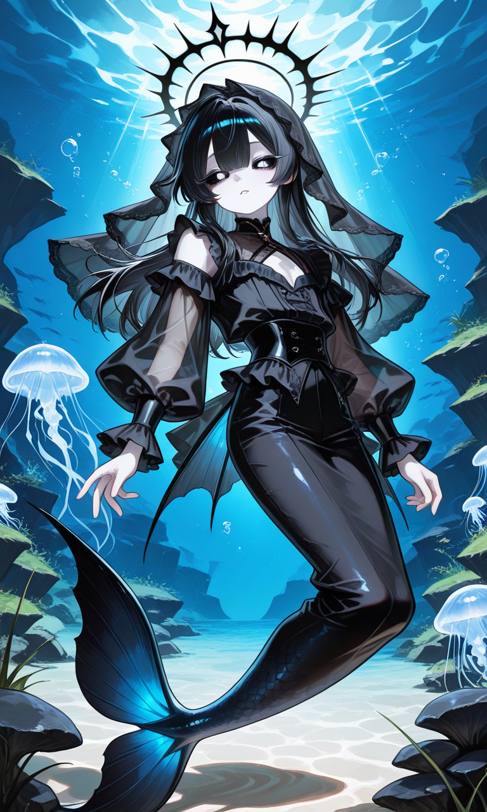

PROLOGUE
심연에서 온 방문자

「……아, 들리시나요?」
「다행이네요. 이번에는 제대로 연결된 모양이에요.」
「처음 뵙겠습니다. 저는 아주 깊은 바다에서 찾아온 연구자랍니다.」
「저희 심연 인어족은 오랜 세월 바닷속에서 살아왔지만, 정작 저희가 어디에서 태어났는지는 아무도 기억하지 못해요.」
「바다에서 태어났는지, 누군가의 꿈에서 비롯되었는지…… 아니면 아주 오래전 누군가가 만든 작은 세계에서 시작되었는지도 모르죠.」
「그래서 한 가지 실험을 준비했답니다. 당신이 하나의 수조를 만들고, 그 안에 환경과 생명을 담아 주셨으면 해요. 저는 그 과정을 관찰하고 기록할게요.」
「정답은 없어요. 작은 유리그릇도, 끝없는 하늘을 담은 바다도 괜찮답니다.」
「자…… 그럼 시작해 볼까요?」
연구 진행도0 / 10
EPILOGUE
관찰 기록
「……후후, 재미있네요. 같은 재료를 드려도 사람마다 전혀 다른 세계가 만들어지는군요.」
「당신이 만든 수조에서 어떤 생명과 이야기가 태어날지, 저도 기대가 된답니다.」
「오늘의 기록은 여기까지로 할까요? 언젠가 이 작은 세계에서 저희 종족의 기원과 닮은 무언가를 발견할지도 모르겠네요.」
「그때까지…… 부디 이 세계를 잘 돌봐 주세요.」